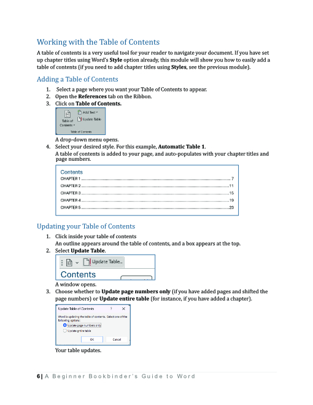
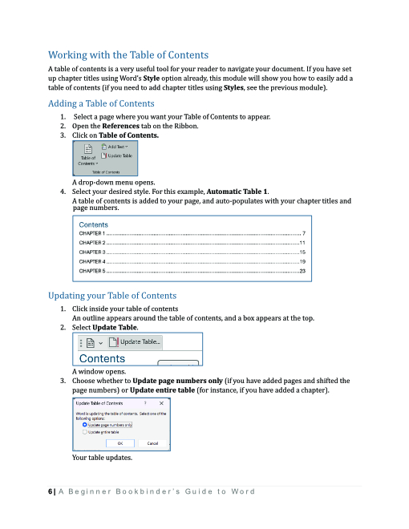

The Beginner Bookbinder's Guide to Microsoft Word
.jpg) 

About this Project
This Word manual was my first real deep-dive into the world of technical writing, and documentation. It served as the cumulative, final project of one of my PWTC classes, and was an intensive, but also fun and rewarding process.
The class covered important topics such as active language, end punctuation, plain language, and more. We began by writing simple documentation for processes such as taking a screenshot using the Microsoft Snipping Tool, and soon started work on experimenting with Word. The intention was to choose a program that we had some familiarity with so that we were not entirely without guidance, but to focus on features that we might not often use so that we could learn them naturally and be able to provide accurate and relatable instructions. Given my interest in bookbinding, I chose to focus on how to use Word as a substitute for a program like Adobe InDesign or Affinity Publisher to format documents for printing. It was a fun and very informative experience.
This Word manual is avaliable here in full as a PDF: